"une annotation explicative m'accompagne à droite"- 1
- Je m’affiche quand on passe la souris sur moi 🐭 !
ggplot2Dans ce troisième TP, nous allons apprendre à créer des représentations graphiques synthétiques avec qui est très bien outillé dans le domaine grâce à la librairie ggplot2. Cette dernière implémente une grammaire des graphiques flexible, cohérente et simple d’usage.
Si vous êtes intéressés par Python , une version très proche de ce TP est disponible dans mon cours de l’ENSAE.
Certains exemples de code présentent des annotations sur le côté, passez votre souris dessus pour les afficher, comme ci-dessous
"une annotation explicative m'accompagne à droite"La pratique de la visualisation se fera, dans ce cours, en répliquant des graphiques qu’on peut trouver sur la page de l’open data de la ville de Paris ici.
Ce TP vise à initier:
ggplot2 pour la construction de graphiques figés ;plotly pour les graphiques dynamiques, au format HTML. Nous approfondirons l’apprentissage des graphiques HTML dans un prochain chapitre en découvrant Observable.Dans ce chapitre, nous allons utiliser les librairies suivantes:
library(scales)
library(readr)
library(dplyr)
library(forcats)
library(lubridate)
library(ggplot2)
library(plotly)Nous verrons par la suite la manière de construire des cartes facilement avec des formats équivalents.
Être capable de construire des visualisations de données intéressantes est une compétence nécessaire à tout data-scientist ou chercheur. Pour améliorer la qualité de ces visualisations, il est recommandé de suivre certains conseils donnés par des spécialistes de la dataviz sur la sémiologie graphique.
Les bonnes visualisations de données, comme celles du New York Times, reposent certes sur des outils adaptés (des librairies JavaScript) mais aussi sur certaines règles de représentation qui permettent de comprendre en quelques secondes le message d’une visualisation.
Ce post de blog est une ressource qu’il est utile de consulter régulièrement. Ce post de blog d’Albert Rapp montre bien comment construire graduellement une bonne visualisation de données.
Un sous-ensemble des données de Paris Open Data a été mis à disposition pour faciliter l’import. Il s’agit d’une extraction, qui commence à dater, des données disponibles sur le site où seules les colonnes qui servent à cet exercice ont été conservées.
Nous proposons de télécharger ces données et les enregistrer dans un fichier sur le disque dur local avant de l’importer1. Cependant, nous n’allons pas faire cela manuellement mais nous allons plutôt utiliser . Effectuer ce type d’action de manière manuelle serait une mauvaise pratique du point de vue de la reproductibilité.
url <- "https://minio.lab.sspcloud.fr/projet-formation/diffusion/python-datascientist/bike.csv"
download.file(url, "bike.gz").gz est importante pour la suite car readr en a besoin pour comprendre que le fichier est compressé.
Chercher à produire une visualisation parfaite du premier coup est illusoire. Il est beaucoup plus réaliste d’améliorer graduellement une représentation graphique afin, petit à petit, de mettre en avant les effets de structure dans un jeu de données.
Nous allons donc commencer par nous représenter la distribution des passages aux principales stations de mesure. Pour cela nous allons produire rapidement un barplot puis l’améliorer graduellement.
Dans cette partie, nous allons ainsi reproduire les deux premiers graphiques de la page d’analyse des données: Les 10 compteurs avec la moyenne horaire la plus élevée et Les 10 compteurs ayant comptabilisés le plus de vélos. Les valeurs chiffrées des graphiques seront différentes de celles de la page en ligne, c’est normal, nous travaillons sur des données plus anciennes.
Les données comportent plusieurs dimensions pouvant faire l’objet d’une analyse statistique. Il est donc nécessaire dans un premier temps de synthétiser celles-ci par des agrégations afin d’avoir un graphique lisible.
bike.gz ;# A tibble: 6 × 2
`Nom du compteur` `Comptage horaire`
<chr> <dbl>
1 Totem 73 boulevard de Sébastopol S-N 197.
2 Totem 73 boulevard de Sébastopol N-S 148.
3 89 boulevard de Magenta NO-SE 144.
4 Totem 64 Rue de Rivoli O-E 140.
5 102 boulevard de Magenta SE-NO 137.
6 72 boulevard Voltaire NO-SE 124.On va maintenant pouvoir se concentrer sur la production de la représentation
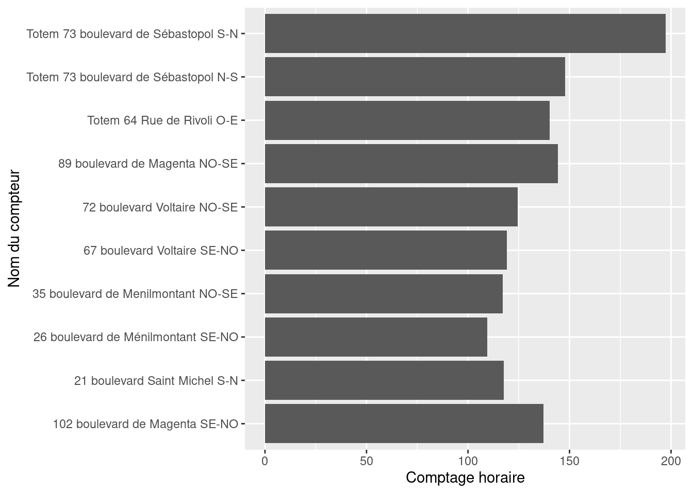
La suite de l’exercice consiste à améliorer graduellement cette représentation pour converger vers la reproduction de la version en open data. Il ne s’agit pas encore de se concentrer sur l’esthétique de la figure mais de la rendre intelligible, à gros trait.
reorder. Cela rendra le message de la figure plus intelligible.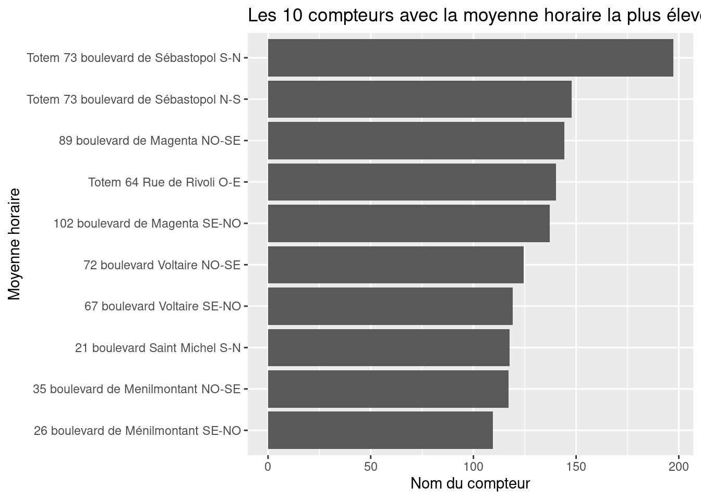
Nom du compteur en fonction de Comptage horaire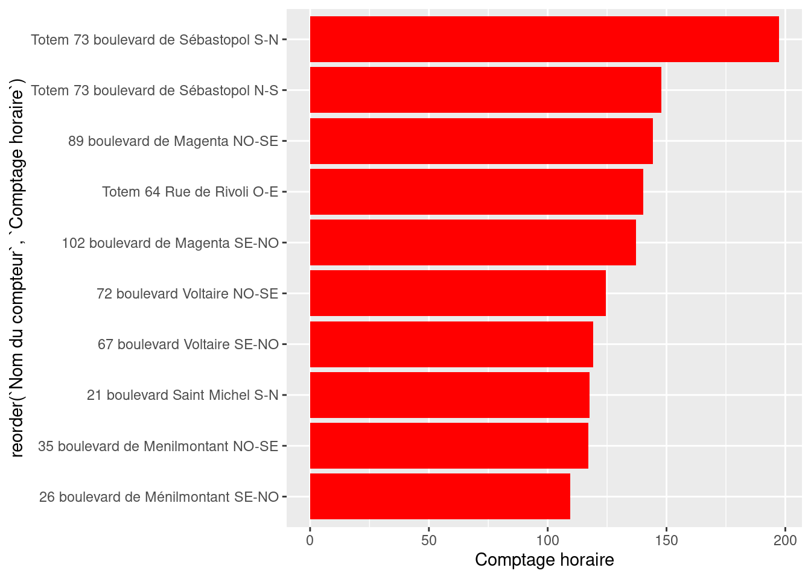
On commence à avoir quelque chose qui commence à transmettre un message synthétique sur la nature des données. On peut néanmoins remarquer plusieurs éléments problématiques (par exemple les labels) mais aussi des éléments ne correspondant pas (les titres des axes, etc.) ou manquants (le nom du graphique…)
La figure comporte maintenant un message mais il est encore peu lisible.

ggplot pour labelliser les axes. Mais la plus simple est la fonction labsggplot2 mais ce n’est pas très soigné. Utiliser un thème plus minimaliste afin d’avoir un fond blanc.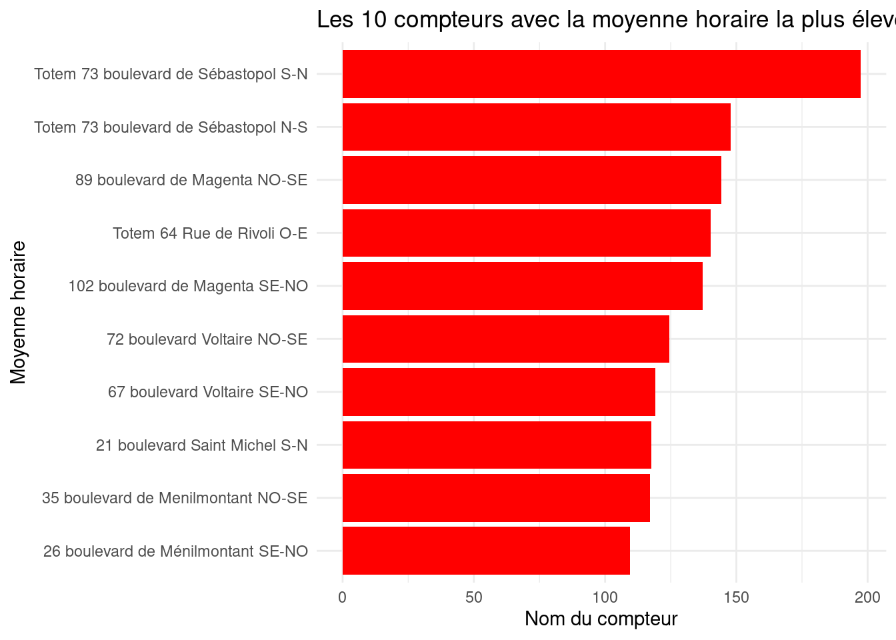
theme(
axis.text.x = element_text(angle = 45, hjust = 1, color = "red"),
axis.title.x = element_text(color = "red"),
plot.title = element_text(hjust = 0.5),
plot.margin = margin(1, 4, 1, 1, "cm")
)On comprend ainsi que le boulevard de Sébastopol est le plus emprunté, ce qui ne vous suprendra pas si vous faites du vélo à Paris. Néanmoins, si vous n’êtes pas familiers avec la géographie parisienne, cela sera peu informatif pour vous, vous allez avoir besoin d’une représentation graphique supplémentaire: une carte ! Nous verrons ceci lors d’un prochain chapitre.
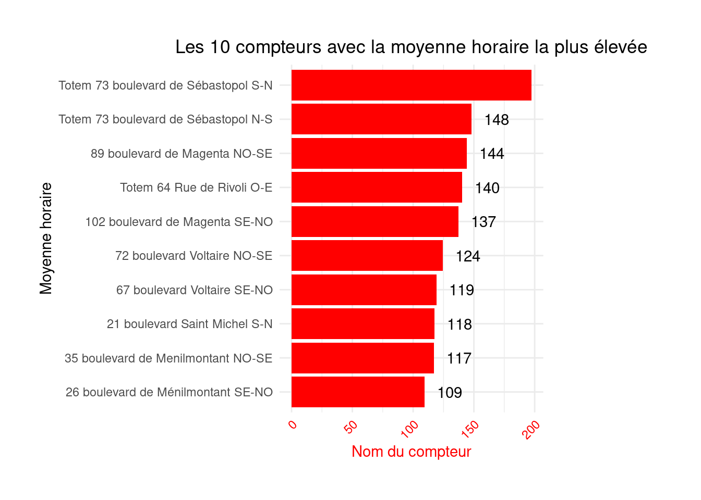
Faire la même chose pour la figure 2 (“Les 10 compteurs ayant comptabilisés le plus de vélos”), afin d’obtenir une figure similaire.
Les diagrammes en batons (barplot) sont extrêmement communs mais qu’ils transmettent. Sur le plan sémiologique, les lollipop charts sont préférables: ils transmettent la même information mais avec moins de bruit (la largeur des barres du barplot noie un peu l’information).
Voici, par exemple, la deuxième figure de la page, rendue non plus sous forme de barplot mais sous forme de lollipop chart:


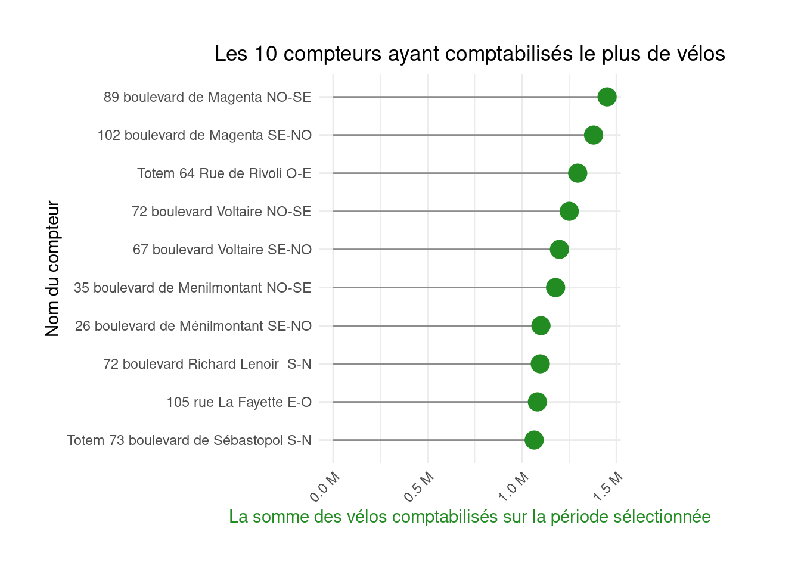
Choisissez votre représentation préférée
Reprendre l’exercice 2 mais à la place d’un barplot, produire un lollipop chart.
On va maintenant se concentrer sur la dimension spatiale de notre jeu de données à travers deux approches:
Pour commencer, reproduisons la troisième figure qui est, encore une fois, un barplot. La première question implique une première rencontre avec une donnée temporelle à travers une opération assez classique en séries temporelles: changer le format d’une date pour pouvoir faire une agrégation à un pas de temps plus large.
format pour créer une variable month dont le format respecte, par exemple, le schéma 2019-08 ;# A tibble: 14 × 2
month value
<chr> <dbl>
1 2019-08 33.6
2 2019-09 55.8
3 2019-10 49.9
4 2019-11 36.0
5 2019-12 67.9
6 2020-01 66.1
7 2020-02 43.2
8 2020-03 29.4
9 2020-04 12.5
10 2020-05 54.6
11 2020-06 85.0
12 2020-07 80.7
13 2020-08 53.2
14 2020-09 98.3Appliquer les conseils précédents pour construire et améliorer graduellement un graphique afin d’obtenir une figure similaire à la 3e production sur la page de l’open data parisien.

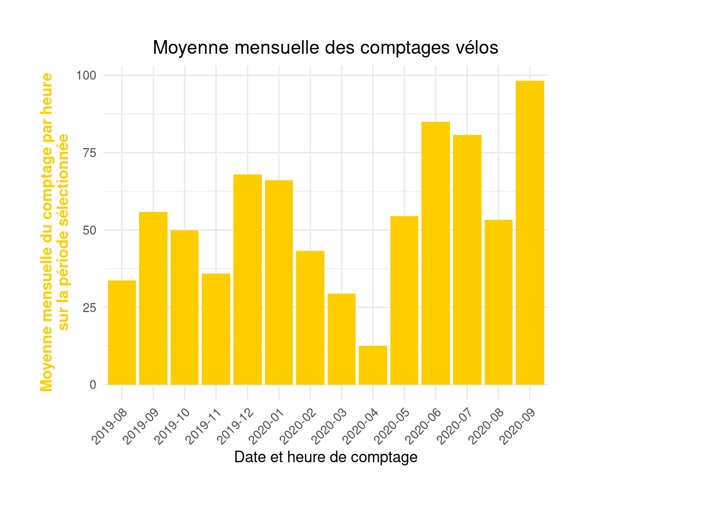
Si vous préférez représenter cela sous forme de lollipop3:
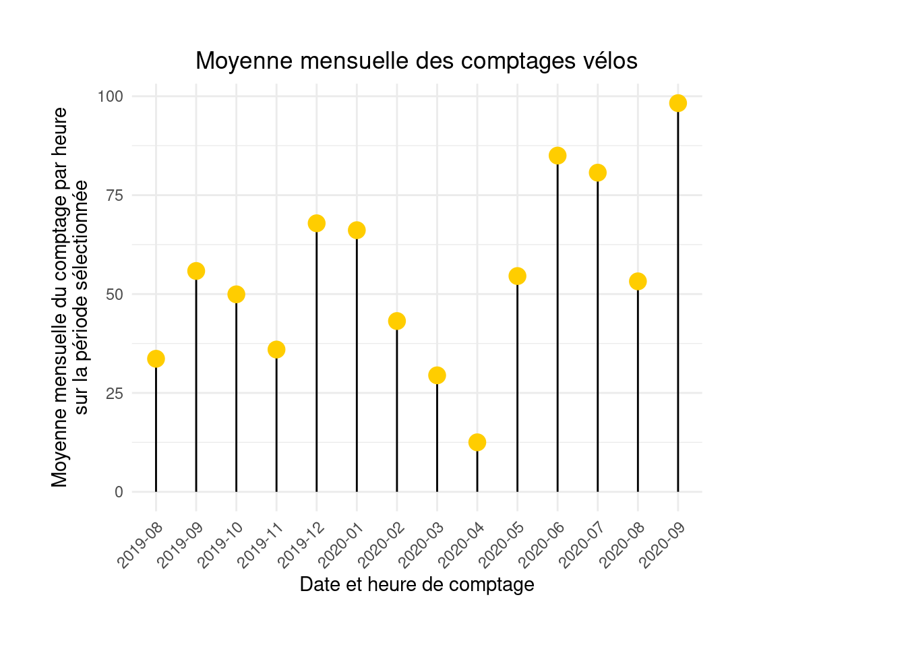
Il est plus commun de représenter sous forme de série les données ayant une dimension temporelle.
day qui transforme l’horodatage en format journalier du type 2021-05-01.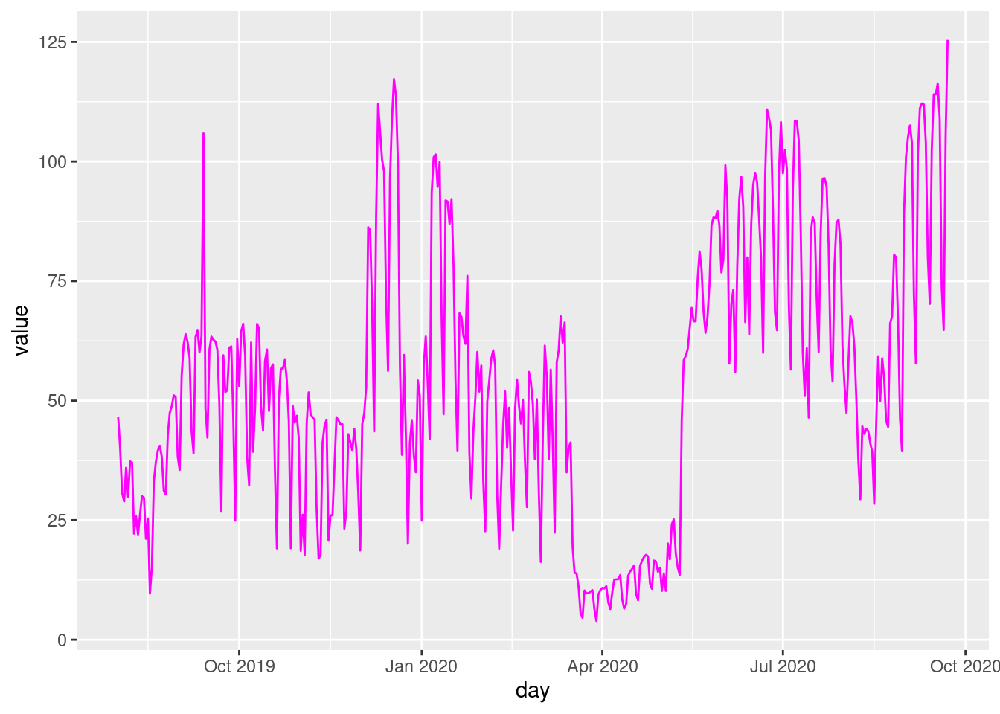
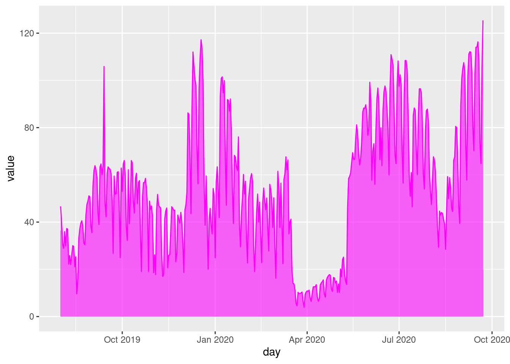
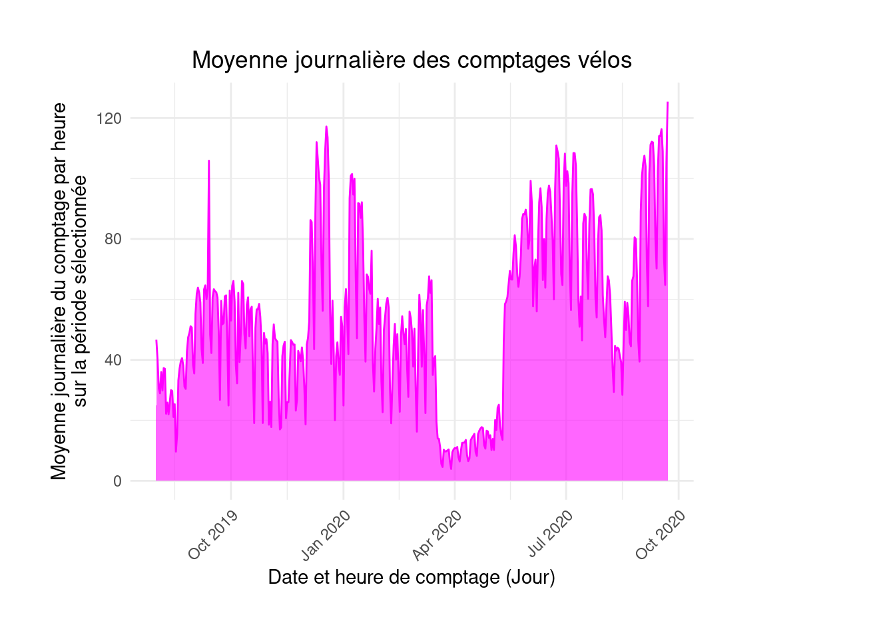
Voici quelques aides pour cet exercice
day du package lubridate
stackoverflow peut vous aider.
# A tibble: 6 × 2
day value
<date> <dbl>
1 2019-08-01 46.7
2 2019-08-02 40.0
3 2019-08-03 30.7
4 2019-08-04 28.9
5 2019-08-05 36.0
6 2019-08-06 29.9A l’issue de cet exercice, on obtient ainsi une figure prenant la forme suivante:

PlotlyL’inconvénient des figures avec ggplot est que celles-ci ne permettent pas d’interaction avec le lecteur. Toute l’information doit donc être contenue dans la figure ce qui peut la rendre difficile à lire. Si la figure est bien faite, avec différents niveaux d’information, cela peut bien fonctionner.
Il est néanmoins plus simple, grâce aux technologies web, de proposer des visualisations à plusieurs niveaux. Un premier niveau d’information, celui du coup d’oeil, peut suffire à assimiler les principaux messages de la visualisation. Ensuite, un comportement plus volontaire de recherche d’information secondaire peut permettre d’en savoir plus. Les visualisations réactives, qui sont maintenant la norme dans le monde de la dataviz, permettent ce type d’approche: le lecteur d’une visualisation peut passer sa souris à la recherche d’information complémentaire (par exemple les valeurs exactes) ou cliquer pour faire apparaître des informations complémentaires sur la visualisation ou autour.
Ces visualisations reposent sur le même triptyque que l’ensemble de l’écosystème web: HTML, CSS et JavaScript. Les utilisateurs de ne vont jamais manipuler directement ces langages, qui demandent une certaine expertise, mais vont utiliser des librairies au niveau de qui génèreront automatiquement tout le code HTML, CSS et JavaScript permettant de créer la figure.
Plotly basique pour représenter sous forme de série temporelle la figure 4, sans se préoccuper du stylehovertemplate et hoverinfoLa version réactive de la figure est ainsi
Cette représentation montre bien le caractère spécial de l’année 2020. Pour rappeller au lecteur distrait la nature particulière de la période, marquée par un premier confinement qu’on voit bien dans les données, on peut, avec l’aide de la documentation, ajouter deux barres verticales pour marquer les dates de début et de fin de cette période:
vline <- function(x = 0, color = "royalblue") {
list(
type = "line",
y0 = 0,
y1 = 1,
yref = "paper",
x0 = x,
x1 = x,
line = list(color = color, dash="dot")
)
}
fig4 %>% layout(shapes = list(vline("2020-03-17"), vline("2020-05-11")))Comme dernier exercice, voici comment reproduire cette figure avec Plotly:
Plotly
fct_reorder du package forcats pour réoordonner les valeurs du dataframe issu de l’exercice 1Plotly pour créer votre figure.PlotlyD’habitude, nous recommandons d’utiliser directement l’URL de téléchargement ce qui évite de créer un fichier intermédiaire sur le disque dur. Néanmoins, ici, l’import direct avec readr ne fonctionnera pas car le fichier est mal interprété par la librairie. Celle-ci ne comprend pas que le fichier est compressé car il lui manque l’extension .gz (un format compressé) à la fin.↩︎
Ce n’est pas forcément une bonne pratique de dataviz de faire cela. En effet, cela signifie que l’échelle et la diversité des données dans celle-ci ne sont pas directement intelligibles.↩︎
J’ai retiré la couleur sur l’axe des ordonnées qui, je trouve, apporte peu à la figure voire dégrade la compréhension du message.↩︎